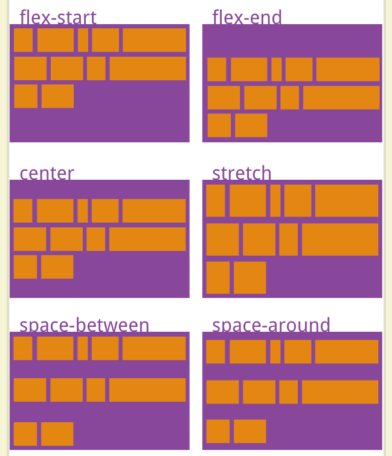

上一页 下一页 2-8 align-items属性 align-content属性定义了多根轴线的对齐方式。如果项目只有一根轴线，该属性不起作用。 .box { align-content: flex-start | flex-end | center | space-between | space-around | stretch; } 该属性可能取6个值。 flex-start：与交叉轴的起点对齐。 flex-end：与交叉轴的终点对齐。 center：与交叉轴的中点对齐。 space-between：与交叉轴两端对齐，轴线之间的间隔平均分布。 space-around：每根轴线两侧的间隔都相等。所以，轴线之间的间隔比轴线与边框的间隔大一倍。 stretch（默认值）：轴线占满整个交叉轴。  上一页 下一页